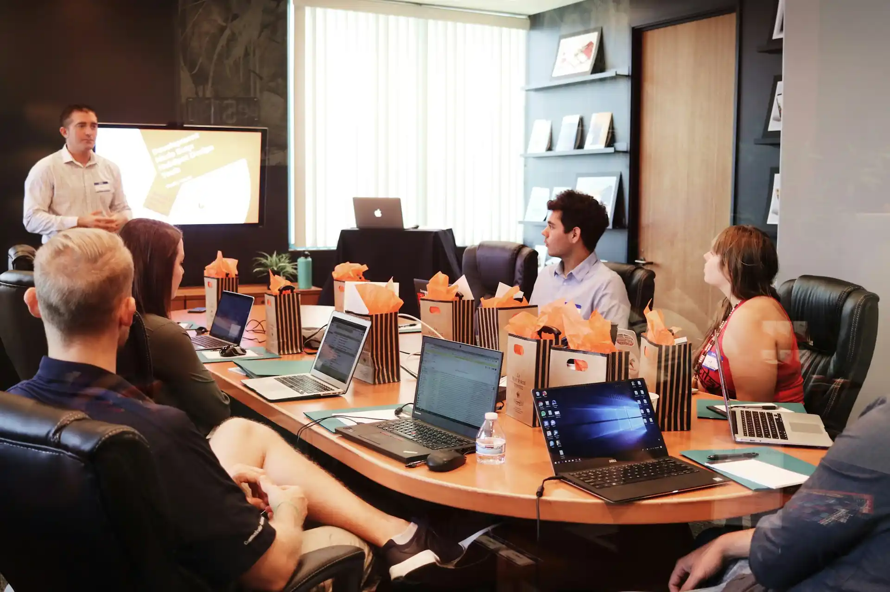
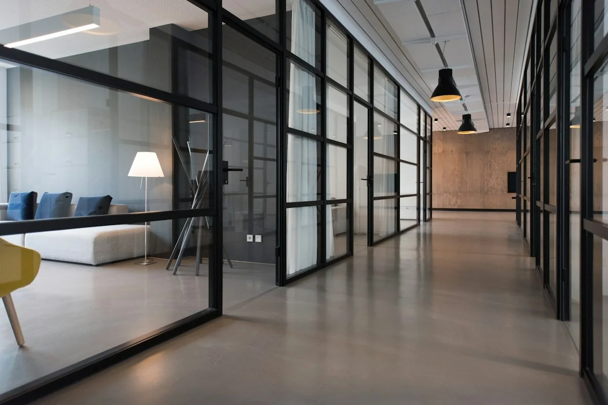

Essential
For small, close-knit teams.
The everyday essentials — records, operations, and a calm foundation to grow from.
- Employee records Included
- Attendance & leave Included
- Self-service basics Included
Our services
From the first hello to ongoing growth, Stackly brings hiring, records, operations, payroll, and development into a connected experience your team can count on.

A connected approach
One foundation. Six service areas. Every moment in between.
Stackly isn't a bundle of disconnected tools. Each service is designed to work with the others — so information flows, handoffs are clear, and nothing important falls between the gaps.
Start where it matters most. Add as you grow. Everything stays in one place, and one tone.
What we do
Each area can stand on its own — together, they form a people practice that scales with your team.
Considered hiring that keeps the human side of recruitment in view.
Confident first days, thoughtful early weeks, and a warm welcome that lasts.
Reliable, organized people data — the right details where you need them.
Attendance, leave, and schedules made calm, clear, and easy to trust.
Confidence in the details — clean data, clear handoffs, quiet accuracy.
Goals, feedback, and development that keep moving all year round.
01 / Talent & hiring
Recruitment is the first real impression of your workplace. Stackly helps you make it a considered one — with structured pipelines, shared visibility, and room for the human conversation at the centre.
02 / Onboarding
The early weeks shape how someone feels about work for a long time. Stackly gives every new colleague a clear, confident start — with checklists, welcome moments, and a soft handoff into their role.
03 / Employee records
Bring employee information into a more reliable, organized home. Clear records help HR teams work with confidence and give employees a simpler way to manage their own details.

04 / Everyday operations
Attendance, schedules, and leave should be easy to understand. Give people a clear view of their time and give teams a calmer way to keep operations moving.
05 / Payroll coordination
Support accurate, well-organized payroll workflows with structured employee information, clear handoffs, and better visibility into the details that matter.
06 / Growth & performance
Help managers and employees keep goals, feedback, and development moving throughout the year. Make progress easier to discuss and next steps easier to see.
How we work
Every partnership starts with listening. From there, we build the foundation that fits your team.
We begin with a conversation — where your team is today, what feels heavy, and what you want more of.
We design a starting point that fits your size, pace, and priorities — no unnecessary layers.
We bring your people data and workflows into one place, carefully and quietly.
We stay alongside your team — refining, adjusting, and helping as the work evolves.
We listen to feedback, watch for patterns, and keep making the experience a little better.
As your team changes, Stackly grows with it — the same care, at a larger scale.
Ways to work with us
Whether you're a small team of ten or a growing organisation of hundreds, there's a place to begin.
Essential
The everyday essentials — records, operations, and a calm foundation to grow from.
Connected
A fuller people practice — hiring, onboarding, and growth, all in one connected experience.
Partnership
A tailored engagement — designed with your team and refined as the work evolves.
Common questions
If your question isn't here, we're always happy to talk it through.
Ask us directlyYes. Many teams begin with one area — usually records or everyday operations — and expand from there. There's no pressure to take everything at once.
Most teams are up and running within a few weeks. Smaller teams often see value in days. We work at your pace, not ours.
Yes. We currently work with partner teams across twelve countries, with support tailored to local practices and compliance needs.
People information deserves careful handling. We design with clear access patterns, transparent responsibilities, and thoughtful defaults throughout.
Every engagement includes guidance during setup and beyond. Partnership plans add dedicated support and tailored workflows.
Start a conversation
Tell us a little about your team and what feels heavy right now. We'll help you find the right starting point.